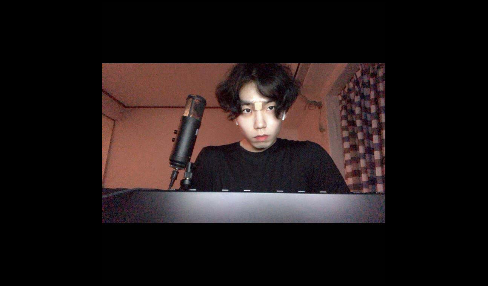
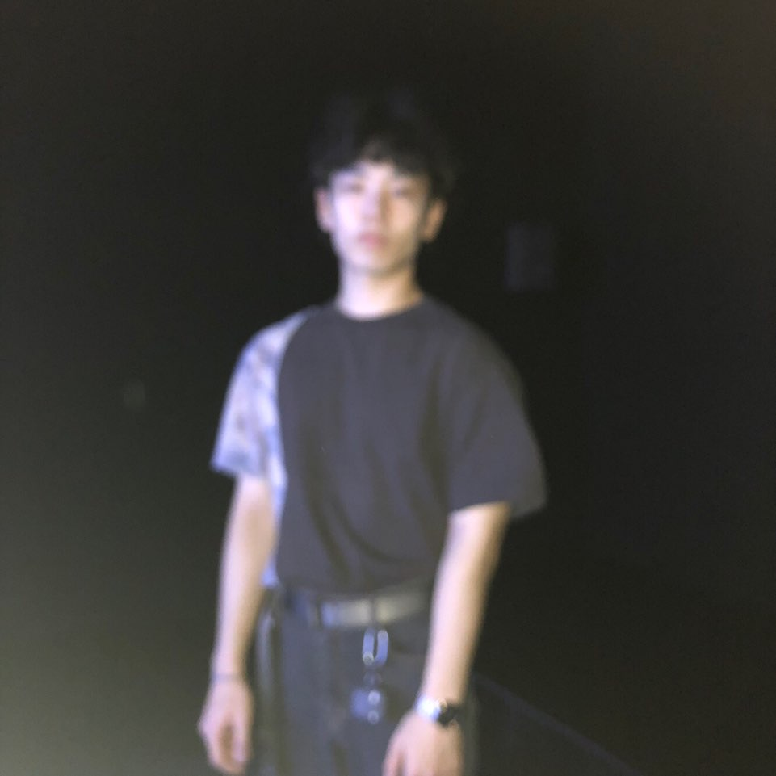
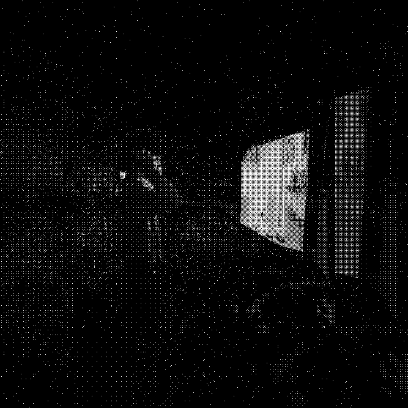
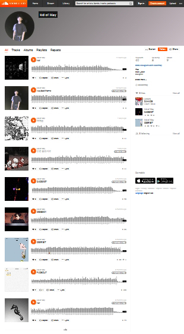
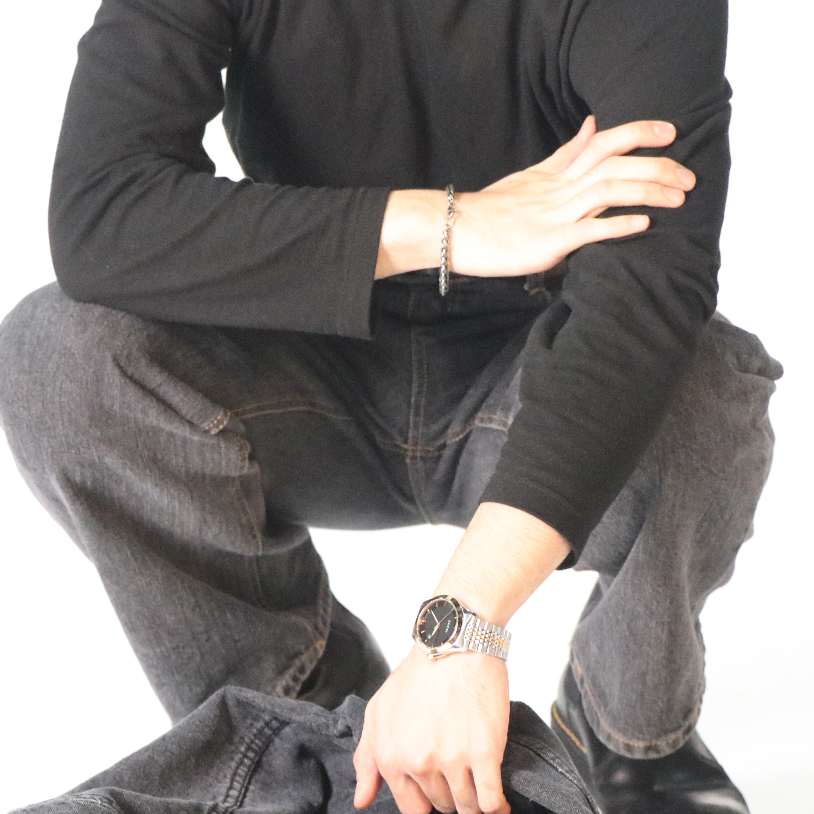

"MAY DAY"
All produced by kid of May
Kim Gyeongbin (born May 28, 1999), known professionally as kid of May, is an korean producer, designer, and songwriter.
 
May was born May 28, 1999, in Busan South Korea. He grew up listening to The Quiett, Beenzino. Nafla's debut album was the first album he purchased. Woods later began listening to code kunst and dpr live, who influenced his future style. He also began listening to Post malone, J cole, and many lil's when he was 17 years old, and has said he is a "k-hip hop's big fan" and called Stranger his favorite album. May began rapping when he was 20, but produced better. he love make loop and sampling type.
kid was kid
When I started thinking about whether I should choose my career path as a painting that I liked, I thought about using creation as my future achievement. My father, who dreamed of living as an artist, and I dreamed of becoming a human cultural asset recipient, but my mother, who became a kindergarten teacher, influenced my values and artistic sensibility the most, and at the same time, showed me artists who were in the face of reality.


After thinking about career path and school, my twin brother and I decided to go to Haman High School, where the academic atmosphere is good, and set a goal to enter a prestigious university rather than art and get a stable job. As soon as I got used to my school life, I saw an announcement about the competition called 'My Dream Presentation Contest' and thought about my dream again. I was working on art activities a little bit at this time, and I still had a lot of lingering doubts, and I was copying textbooks to take pen, solve math problems, or prepare for my school exams, but I knew better than anyone else that what I really wanted to do was to hold pen and create. After thinking about it, I participated in my dream presentation competition and I made a presentation about my dream in front of the stage that the whole school student sees. I was able to present myself to my friends here for the first time in my middle school years, including my paintings, comics that I wrote in magazines, and my first book of poems. After that, there was a lot of interest in my paintings and creations, and students and teachers cheered me on for my activities.

"MAY DAY" @kidofmay
My representative creation is the character potato. We were able to melt this character into our creations and turn it into a character loved by many students. The animation "Ucc," which features a potato that aims to create a harmonious society with the attention of discrimination against foreign workers and multicultural families who have studied in many areas, has produced a good result by submitting a good result. Through art club activities such as face painting and installation art competitions, I continuously showed my presence in my creations and showed my paintings and writings to students through various media outlets while working as a school editor. When I was a senior in high school, I created my own brand called "celebrate my nineteen" to take inspiration from props that symbolize students, to take models, to take pictures, to post pictorials on the homepage, and to let the public know that my creations are alive and breathing here. When I looked back at myself for three years in high school, I was always creating, thinking and trying. It's been three years since I found out that it's the artist who moves and touches people's minds, and three years that I've gained the confidence to live as an artist. The fun of painting and creating was that the three-year journey was naturally directed at visual design.



Axllround player
about one's first experience
The first word is always strange. Is it because it takes a lot of courage to start a new job? To start something new for me, who is always chasing after familiar things, is always in need of a lot of trouble and that much time.
However, when it comes to the experience of growing up naturally, I can say that the gate is a starting point for natural and compelling experiences. Things about love like first love, first love, first kiss, first sex, anything that's so provocative and extremely deviant, such as a first lie or a first cigarette or a first cigarette, is something that anyone can go through (and may not be) in time.
When I first received the topic, I thought about what to write. I was worried that the first love story would be a dirty story about Sunjeongnam, and the first sex or kiss story would be nothing more than a night rumor that middle school students would like. But when I first thought about the purpose, a 21 year old who was extremely personal was the first to speak to someone. I literally try to write without thinking because I can't read much and I think I need just a decent amount of writing to gain a typographic experience.